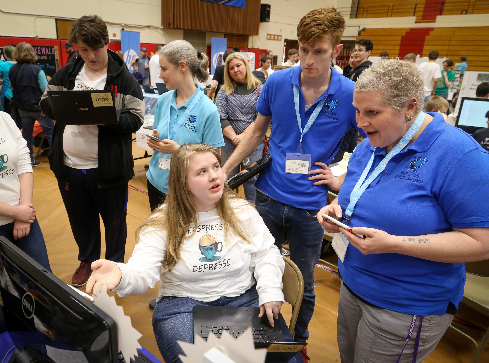

Support
OGPC could not happen without the generous donations of time and money by individuals and companies. Here are ways you can help.
Volunteer
For the main event
Every spring we need dozens of volunteers to spend a day helping make the Main Event happen.
Our greatest need is for judges. Fortunately it is also a really fun and rewarding job – you get to spend the day playing student games and talking to the teams. Judges evaluate teams and their products and give candid, constructive feedback directly to the teams. There are multiple judging areas… so no matter what your professional background, there will be something you are qualified to evaluate - you do NOT have to be a professional programmer or game developer.

We also need volunteers interested in speaking to students. The idea of working in game development and related fields seems like a dream to many of the kids. Hearing first-hand accounts of how projects unfold, how teams work together, and what’s possible in the real world can help students turn those dreams into concrete goals. To this end, we try to offer a range of professional speakers every year in breakout sessions throughout the day.
Finally, we can always use more specialized skill sets. Are you a photographer or videographer willing to document the event? If so, please get in touch!
If you are interested in helping in any of these ways, please get on our mailing list as a volunteer to be notified each year when we start recruiting.
Planning
OGPC isn’t just a one-day event. There’s marketing, sponsorships, outreach, web updates, software development, event planning, and much more that needs to be done through the year.
OGPC is 100% volunteer run - it depends on people like yourself donating time to make all these things happen. You can join the planning group to help year around, or chip in for a particular project.
If you have some time you are willing to lend to the cause, please reach out to us at info@ogpc.info.
Shop With Amazon Smile
If you shop Amazon after using this link, Amazon will donate a small portion of your purchases to OGPC.
Sponsor
Putting on OGPC each year requires renting a facility, buying awards, and providing food to volunteer judges, as well as basic organizational expenses like insurance and web hosting. Without the financial support of individuals and corporations, the event would not be possible.
We are a tax-exempt 501(c)3 that is run entirely by volunteers – 100% of our funding goes to events and expenses. We are committed to transparent operation and are GuideStar Gold Certified. Our tax ID (EIN) is 47-5440436.
You can support us with a tax-free donation of money or of products to use as giveaways for participants.
If you have questions or would like to talk to us about sponsorship, please email us at info@ogpc.info.